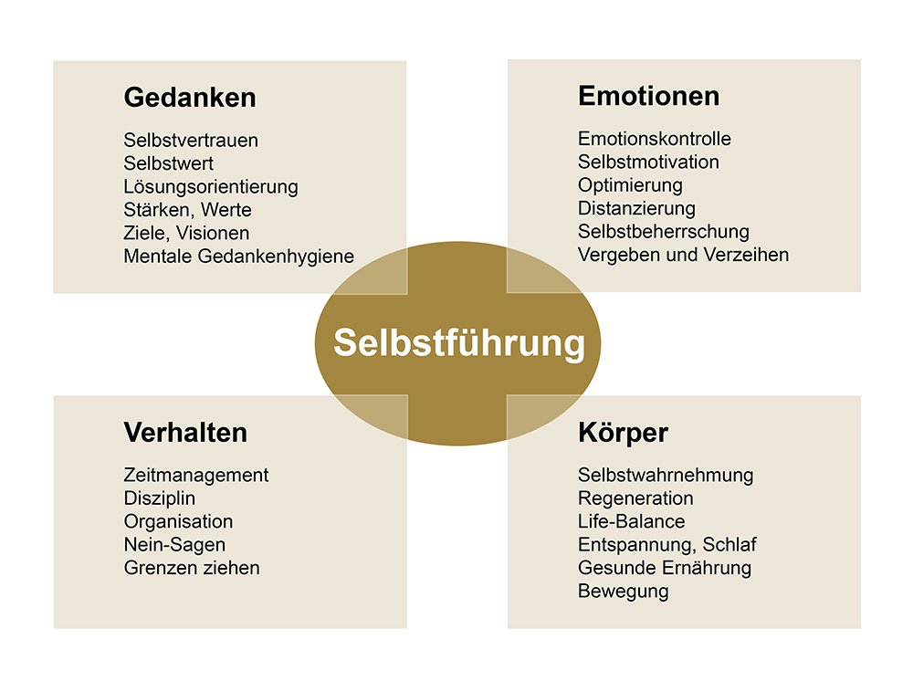

Selbstorganisation
In dieser woche hatten wir das thema Selbstführung und selbstorganisation.
Bei Selbstfürung und Selbstorganisation geht es darum wie mann am efecktivsten arbeiten kann.
Arbeiten in der Gruppe
Förderlich ist eine Atmosphäre der gegenseitigen Wertschätzung, Offenheit und Transparenz.
Es braucht orientierung und Transparenz in Bezug auf Ziele, Inhalte, Methodik, Abläufe, Zeiten und Rahmenbedingungen.
Es braucht aucg Gelegenheiten, sich kennen zu lernen und Gefässe, um Erwartungen zu klären.
Ergonomie
Bei Ergonomie geht es darum seinen Arbeitsplatz an sich an zu passen damit man so evektiv wie möglich arbeiten kann.
Das kann zum beispiel sein wen man seinen Tisch höher stellt oder den Monitor richtet das man keine nackenschmerzen bekommt.
Die meisten arbeits plätze sin schon ergonomisch eingerichtet weil die firma wil das du so effektivst wie nur möglich arbeiten kannst.
Fazit
Ergonomie ist sehr wichtig daman sich sons auch über längere zeit schädigen kann und das so starch das man das vlt nicht heilen kann.
Damit ist gemeint das man eine krümmung hat oder eine angewohnheit die nicht optimal ist.
Selbstführung

Im Kern geht es bei der Selbstführung darum, die eigenen Gedanken, Emotionen und das Verhalten zielorientiert zu beeinflussen und in eine positive Richtung zu lenken.
SMARTE Ziele
Das "S" von smart steht für Spezifisch, "M" steht für messbar, "A" steht für Attraktive, "R" steht für Realistisch, "T" steht für Terminiert.
Diese abkürzungen stehen dafür wie ein Ziel aufgebaut werden sollte das es am evektivsten ist. Wenn man seine ziele nach diese vorgaben ausrichtet lernt man schnell und sehr efektiv.
selbstreflexion
Selbstreflexion ist ein Prozess, bei dem eine Person ihre eigenen Gedanken, Gefühle, Handlungen und Erfahrungen betrachtet und analysiertt.
Mann schreibt seine gedanken zur der kurzen vergangenheit auf und überegt was man anders machen oder besser machen könnte.
Eine reflexion ist also nicht mehr als ein Rückblick und Bewertung.
Fazit
Mit einer Selbstreflexion kann man sich starch bei seiner arbeit verbessern und effektiver an seinen Themen arbeiten.
Ich finde eine selbstreflexion ist sehr nützlich und würde sie weiter empfehlen.